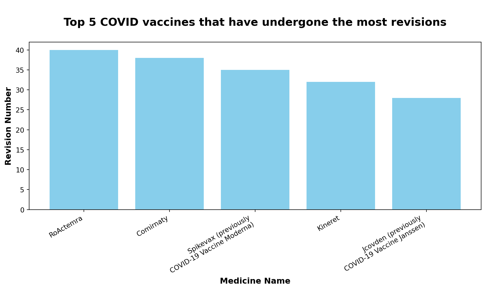
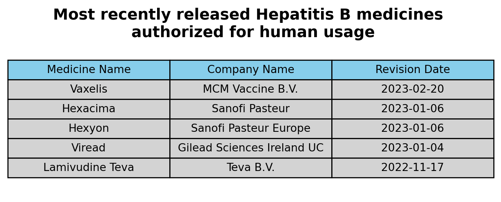
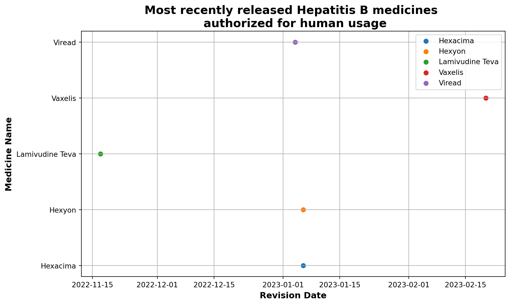

# Load Libraries
import numpy as np
import pandas as pd
import matplotlib.pyplot as plt
import textwrapExploring European Drug Development: COVID Vaccine Revisions and Recent Hepatitis B Medications
INFO 523 - Project 1
Abstract
Add project abstract here.
# Read in the data
url = 'data/drugs_dataset.csv'
drugs = pd.read_csv(url)
drugs.head()| category | medicine_name | therapeutic_area | common_name | active_substance | product_number | patient_safety | authorisation_status | atc_code | additional_monitoring | ... | marketing_authorisation_holder_company_name | pharmacotherapeutic_group | date_of_opinion | decision_date | revision_number | condition_indication | species | first_published | revision_date | url | |
|---|---|---|---|---|---|---|---|---|---|---|---|---|---|---|---|---|---|---|---|---|---|
| 0 | human | Adcetris | Lymphoma, Non-Hodgkin; Hodgkin Disease | brentuximab vedotin | brentuximab vedotin | 2455 | False | authorised | L01XC12 | False | ... | Takeda Pharma A/S | Antineoplastic agents | 2012-07-19 | 2022-11-17 | 34.0 | Hodgkin lymphomaAdcetris is indicated for adul... | NaN | 2018-07-25T13:58:00Z | 2023-03-13T11:52:00Z | https://www.ema.europa.eu/en/medicines/human/E... |
| 1 | human | Nityr | Tyrosinemias | nitisinone | nitisinone | 4582 | False | authorised | A16AX04 | False | ... | Cycle Pharmaceuticals (Europe) Ltd | Other alimentary tract and metabolism products, | 2018-05-31 | 2023-03-10 | 4.0 | Treatment of adult and paediatric patients wit... | NaN | 2018-07-26T14:20:00Z | 2023-03-10T17:29:00Z | https://www.ema.europa.eu/en/medicines/human/E... |
| 2 | human | Ebvallo | Lymphoproliferative Disorders | tabelecleucel | tabelecleucel | 4577 | False | authorised | NaN | True | ... | Pierre Fabre Medicament | NaN | 2022-10-13 | 2023-03-09 | 2.0 | Ebvallo is indicated as monotherapy for treatm... | NaN | 2022-10-12T16:13:00Z | 2023-03-10T13:40:00Z | https://www.ema.europa.eu/en/medicines/human/E... |
| 3 | human | Ronapreve | COVID-19 virus infection | casirivimab, imdevimab | casirivimab, imdevimab | 5814 | False | authorised | J06BD | True | ... | Roche Registration GmbH | Immune sera and immunoglobulins, | 2021-11-11 | 2023-02-24 | 3.0 | Ronapreve is indicated for:Treatment of COVID-... | NaN | 2021-11-12T16:30:00Z | 2023-03-10T12:29:00Z | https://www.ema.europa.eu/en/medicines/human/E... |
| 4 | human | Cosentyx | Arthritis, Psoriatic; Psoriasis; Spondylitis... | secukinumab | secukinumab | 3729 | False | authorised | L04AC10 | False | ... | Novartis Europharm Limited | Immunosuppressants | 2014-11-20 | 2023-01-26 | 30.0 | Plaque psoriasisCosentyx is indicated for the ... | NaN | 2018-06-07T11:59:00Z | 2023-03-09T18:53:00Z | https://www.ema.europa.eu/en/medicines/human/E... |
5 rows × 28 columns
Question 1 Solution
# Replace null values with empty string in 'therapeutic_area' column
drugs['therapeutic_area'].fillna('', inplace=True)
# Filter COVID vaccines based on 'therapeutic_area'
covid_vaccines = drugs[drugs['therapeutic_area'].str.contains('COVID', case=False)]
# Exclude medicines with conditions applied
covid_vaccines = covid_vaccines[~covid_vaccines['conditional_approval']]
# Filter the dataset to include only authorised medicines
covid_vaccines = covid_vaccines[covid_vaccines['authorisation_status'] == 'authorised']
# Sort the dataset based on 'revision_number' in descending order
covid_vaccines_sorted = covid_vaccines.sort_values(by='revision_number', ascending=False)
# Extract relevant columns ('medicine_name' and 'revision_number')
vaccine_revisions = covid_vaccines_sorted[['revision_number', 'medicine_name', 'therapeutic_area']]C:\Users\ual-laptop\AppData\Local\Temp\ipykernel_1200\667484765.py:2: FutureWarning: A value is trying to be set on a copy of a DataFrame or Series through chained assignment using an inplace method.
The behavior will change in pandas 3.0. This inplace method will never work because the intermediate object on which we are setting values always behaves as a copy.
For example, when doing 'df[col].method(value, inplace=True)', try using 'df.method({col: value}, inplace=True)' or df[col] = df[col].method(value) instead, to perform the operation inplace on the original object.
drugs['therapeutic_area'].fillna('', inplace=True)# Top-5 data
medicine_names = vaccine_revisions['medicine_name'][:5]
revision_numbers = vaccine_revisions['revision_number'][:5]
# Create a figure and axis object
fig, ax = plt.subplots(figsize=(10, 6))
# Create bar plot
bars = ax.bar(medicine_names, revision_numbers, color='skyblue')
# Set labels and title with customized font
label_font = {'fontsize': 12, 'fontweight': 'bold'}
title_font = {'fontsize': 16, 'fontweight': 'bold'}
# Set labels and title
ax.set_xlabel('Medicine Name', fontdict=label_font)
ax.set_ylabel('Revision Number', fontdict=label_font)
ax.set_title('\n Top 5 COVID vaccines that have undergone the most revisions \n', fontdict=title_font)
# Wrap long medicine names into two lines
wrapped_names = [textwrap.fill(name, width=25) for name in medicine_names]
# Set tick labels with line breaks
ax.set_xticklabels(wrapped_names, rotation=30, ha='right')
# Show plot
plt.tight_layout()
plt.show()C:\Users\ual-laptop\AppData\Local\Temp\ipykernel_1200\3540037155.py:24: UserWarning: set_ticklabels() should only be used with a fixed number of ticks, i.e. after set_ticks() or using a FixedLocator.
ax.set_xticklabels(wrapped_names, rotation=30, ha='right')
Question 2 Solution
# Replace null values with empty string in 'therapeutic_area' column
drugs['therapeutic_area'].fillna('', inplace=True)
# Filter the dataset to include only medicines related to 'Hepatitis B' in the 'therapeutic_area' variable
hepatitis_b_medicines = drugs[drugs['therapeutic_area'].str.contains('Hepatitis B', case=False)]
# Filter the dataset to include only medicines for humans in the 'category' variable
human_hepatitis_b_medicines = hepatitis_b_medicines[hepatitis_b_medicines['category'] == 'human']
# Filter the dataset to include only authorised medicines
authorised_hepatitis_b_medicines = human_hepatitis_b_medicines[human_hepatitis_b_medicines['authorisation_status'] == 'authorised']
# Sort the dataset based on the 'revision_date' in descending order to get the most recently revised medicines
recently_revised_medicines = authorised_hepatitis_b_medicines.sort_values(by='revision_date', ascending=False)
# Extract and display the relevant columns ('medicine_name' and 'marketing_authorisation_holder_company_name') for the most recently revised medicines
top_5_result = recently_revised_medicines[['medicine_name', 'marketing_authorisation_holder_company_name', 'revision_date']].head(5)
# Extract only the date part using string operations
top_5_result['revision_date'] = top_5_result['revision_date'].str[:10]
print(top_5_result) medicine_name marketing_authorisation_holder_company_name revision_date
134 Vaxelis MCM Vaccine B.V. 2023-02-20
345 Hexacima Sanofi Pasteur 2023-01-06
346 Hexyon Sanofi Pasteur Europe 2023-01-06
360 Viread Gilead Sciences Ireland UC 2023-01-04
535 Lamivudine Teva Teva B.V. 2022-11-17Option 1: Display results
# Custom column labels
custom_col_labels = ['Medicine Name', 'Company Name', 'Revision Date']
# Draw a table to display the result
plt.figure(figsize=(8, 2.5))
table = plt.table(cellText=top_5_result.values,
colLabels=custom_col_labels,
loc='center',
cellLoc='center',
colColours=['skyblue']*len(top_5_result.columns),
cellColours=[['lightgrey']*len(top_5_result.columns)]*len(top_5_result),
fontsize=10)
table.auto_set_font_size(False)
table.set_fontsize(10)
table.scale(1, 1.5) # Adjust the scale to make the table more compact
plt.axis('off') # Turn off axis
plt.title('Most recently released Hepatitis B medicines \n authorized for human usage', fontdict={'fontsize': 14, 'fontweight': 'bold'})
plt.show()
Option 2: Display results
# Convert 'revision_date' to datetime data type
top_5_result['revision_date'] = pd.to_datetime(top_5_result['revision_date'])
# Plot the scatter plot
plt.figure(figsize=(10, 6))
for medicine, group in top_5_result.groupby('medicine_name'):
plt.scatter(group['revision_date'], [medicine] * len(group), label=medicine)
# Customize the plot
plt.xlabel('Revision Date', fontdict={'fontsize': 12, 'fontweight': 'bold'})
plt.ylabel('Medicine Name', fontdict={'fontsize': 12, 'fontweight': 'bold'})
plt.title('Most recently released Hepatitis B medicines \n authorized for human usage', fontdict={'fontsize': 16, 'fontweight': 'bold'})
plt.legend()
plt.grid(True)
plt.tight_layout()
# Show the plot
plt.show()